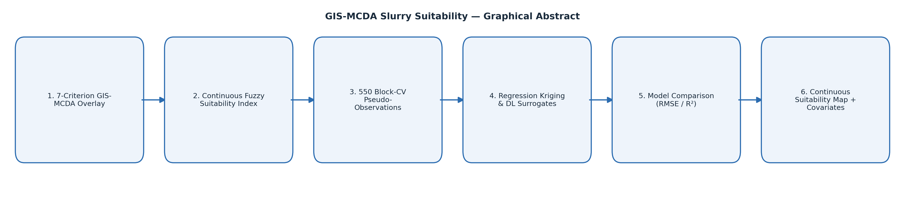

GIS-MCDA Slurry Suitability
R² = 0.77 (best model: random-forest regression kriging)
Graphical abstract

Process simulation
Naziru explains this step
Ask a question about this work
Send Naziru a question directly, it's delivered straight to his inbox.
Viva-style Q&A about this project
Private, for the author only.
This section is password-protected.
Incorrect password.